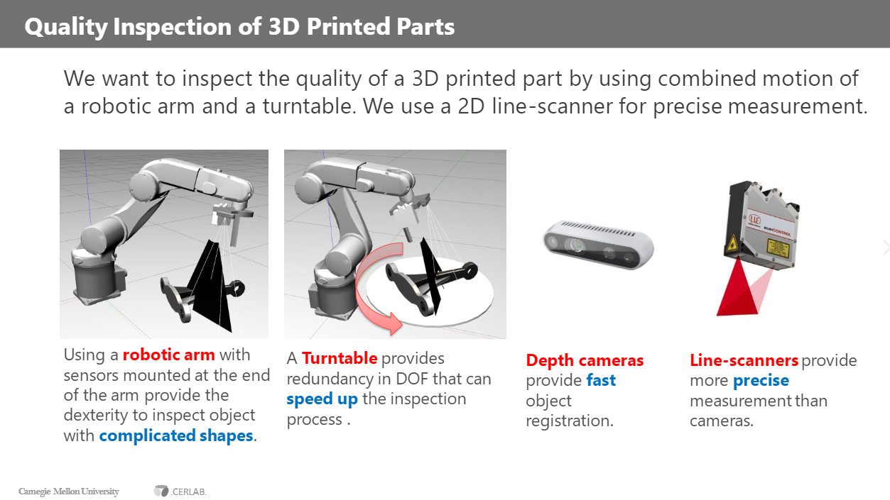
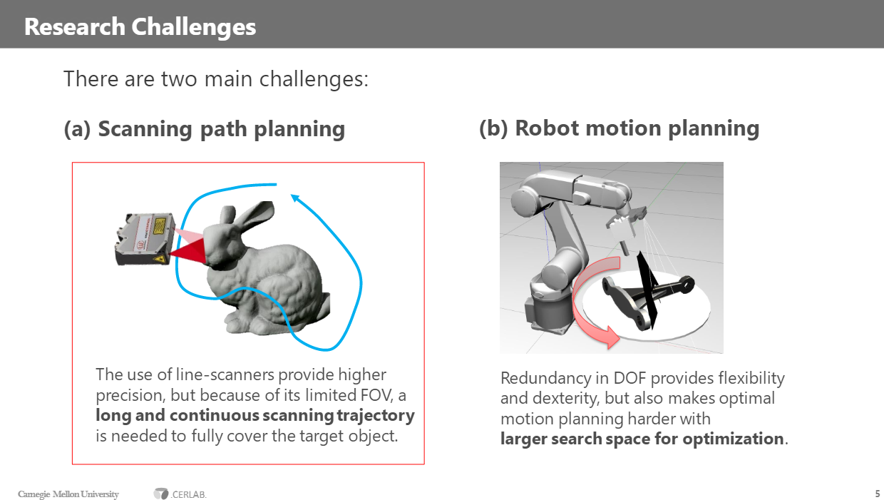
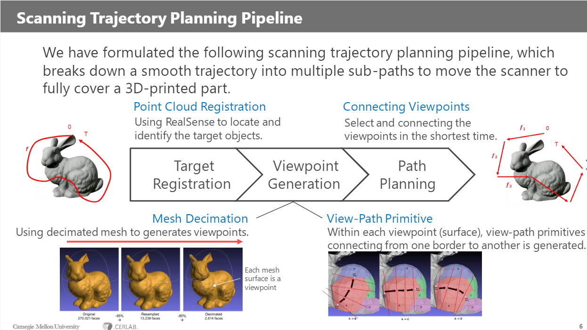
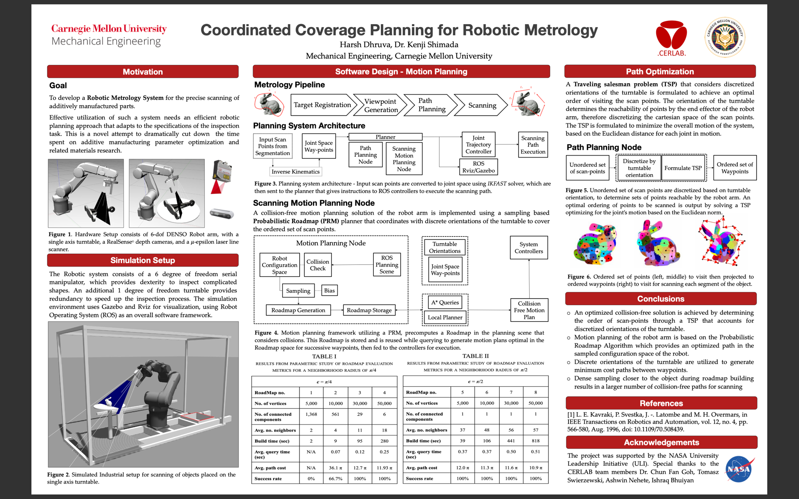

Graduate Research · CMU CERLAB
Graduate Research · CMU CERLAB
Robotic post-processing of additive-manufacturing parts.
NASA ULI-sponsored research at Carnegie Mellon's CERLAB on a robotic metrology system for the quality inspection of complex, custom 3D-printed parts, planning coverage for a robot arm and turntable so a line-scanner can fully scan an arbitrary object.
As a graduate research student at the Computational Engineering and Robotics Lab (CERLAB) at Carnegie Mellon University, I worked on a robotic system for the post-processing of additive-manufacturing parts. The project was sponsored by the NASA University Leadership Initiative (ULI), and is aimed one day at processing the kind of complex, custom-made parts needed for spacecraft and satellites, where each part is one-off and can't be checked with a fixed jig.
My work centered on the quality inspection side of the system: developing a way to produce an accurate scan of a custom, complex part. There are several pieces to that, but the two main research challenges are scanning path planning and robot motion planning.
The system
The idea is to inspect the quality of a 3D-printed part with the combined motion of a robotic arm and a turntable, using a 2D line-scanner for precise measurement. The arm gives the dexterity to reach complicated shapes; the turntable adds a redundant degree of freedom that speeds up inspection. Line-scanners give more precise measurement than depth cameras, at the cost of a small field of view.

Research challenges
Two hard problems sit at the core. In scanning path planning, a line-scanner's limited field of view means you need a long, continuous scanning trajectory to fully cover the target. In robot motion planning, the redundant degree of freedom adds flexibility and dexterity, but it also enlarges the search space for finding an optimal, collision-free motion.

Scanning trajectory pipeline
The pipeline breaks a smooth scanning trajectory into sub-paths that move the scanner to fully cover a 3D-printed part. It runs in three stages: target registration, locating the part with a RealSense; viewpoint generation, decimating the mesh so each surface becomes a viewpoint; and path planning, connecting the viewpoints in the shortest time, with view-path primitives generated across each surface.

Research poster
The work came together in a research poster, Coordinated Coverage Planning for Robotic Metrology, with Dr. Kenji Shimada. The motion planning uses a sampling-based Probabilistic Roadmap (PRM) coordinated with discrete turntable orientations, and the order in which scan points are visited is optimized as a Traveling Salesman Problem over the orientations reachable by the arm. The hardware setup is a 6-DOF DENSO arm, a single-axis turntable, a RealSense depth camera, and a µ-epsilon laser line-scanner, simulated in Gazebo and Rviz on ROS.
